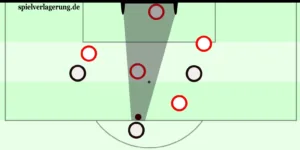
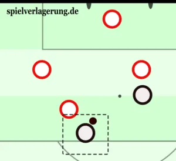
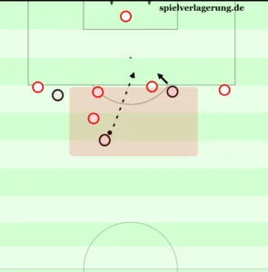
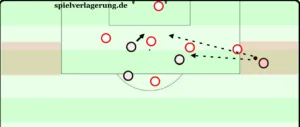
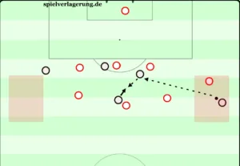
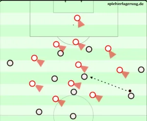
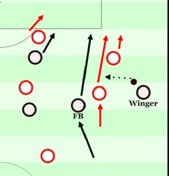
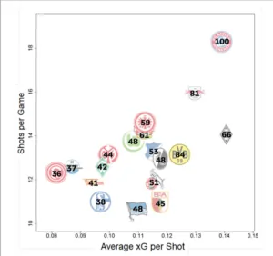
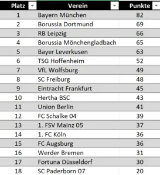

机会转化（Chance Conversion）——MH
Chance Conversion – MH
机会转化率（conversion rate）在统计上已被证明是预测一支球队成功的最佳指标之一（Souza 等，2019）。更令人惊讶的是，其背后的影响因素对大多数人而言仍基本未知，使机会转化对许多人来说近乎一个黑箱。本文旨在提升得分情境的有效性（effectiveness）与效率（efficiency）。
机会转化最常与心理层面联系在一起。相应地，在失利之后，它有时被用作借口，部分原因是缺乏更有说服力的替代解释。毕竟，据说教练对球员的心理状态影响甚微乃至没有影响。相反，人们期望球员学会更好地处理得分机会带来的压力，从而在门前变得更高效。
目录
- 什么是机会转化？
- 机会的有效性——创造高质量得分机会
2.1 用预期进球（xG）模型评估机会
2.2 射门瞬间影响得分概率的额外因素
2.3 机会的创造／评估行动序列而非射门本身
2.3.1 从控球阶段与转换情境中创造机会
2.3.2 前场（final third）中有效的助攻区域
2.4 从控球价值（PV）模型评估控球阶段机会的启示
2.5 机会的定义
2.6 提高有效性的运动能力
2.7 有效的比赛风格
- 机会的效率——最优利用现有机会
3.1 可持续地提高效率
3.1.1 提高效率——是否可能？
3.1.2 如何提高效率？
3.1.3 更高效的门前终结：用射门后预期进球（PSxG）模型评估射门
3.2 防止效率的短期波动
3.2.1 团队凝聚力与轮换对效率波动的影响
3.2.2 国家队的反直觉机会转化
3.2.3 机会数量与质量对效率的影响
3.3 在最优条件下应对暂时性表现不佳
- 利用随机性
4.1 随机性的角色——一项考察
4.2 足球中的随机性与运气
4.3 一种随机但不依赖运气的比赛风格
- 结论
1. 什么是机会转化？
机会转化衡量的是进球数与所创造机会数之比。这一比率越高，说明转化越好。与常见假设相反，机会转化并不能仅靠增加机会数量来提高。更多的机会并不自动带来更好的转化率。因此，如果一名教练批评机会转化，其主要目标不应仅仅是制造更多机会。
这一视角可能得出与直觉足球逻辑相矛盾的结果。球队实际上可以在机会数量减少的情况下更成功，只要这种减少伴随着质量（有效性）和／或效率的提升。尽管机会数量通常会提高得分的概率，但当转化率确实很差时，优先事项应当是改进转化率本身。在这类情况下，提升转化比单纯增加机会数量更能提高得分的可能性。
因此，改善机会转化有两条途径：
- 提高有效性（effectiveness），从而间接改善转化率；
- 提高效率（efficiency），从而直接改善转化率。
有效性与效率的区别，从根本上可以这样解释：有效性意味着做正确的事，而效率意味着以正确的方式做事。有效性衡量目标是否达成，而效率评估目标是如何达成的。存在效率的地方，必然存在最低程度的有效性，但反之不一定成立。
应用在足球的机会转化上，这两个术语可以这样使用：有效性指实际把机会转化为进球（"我们进球了"）；效率指用尽可能少的机会打进尽可能多的球（"我们凭一次射门就进球，而不是十次"）。
由此产生几种组合。高有效性配合低效率意味着进球多，但错失的机会也多；球队进球频繁，但代价高昂。与之相对，高效率配合低有效性则意味着用极少机会打进相对较多的球，但总进球数仍然偏低。后一种组合在放到较长时间段来考察时尤为相关。
2. 机会的有效性——创造高质量得分机会
本部分的前提是：有效性的提升来自机会质量的提高，从而带来更好的转化，因为质量更高的射门情境更可能转化为进球。为提高得分机会的质量，首先必须确立什么构成高质量的射门情境。在这一领域，研究与数据分析已相当深入。评估机会最著名的模型无疑是预期进球（Expected Goals，xG）。
2.1 用预期进球（xG）模型评估机会
根据 Gonzáles-Rodenas 等（2019）对 UEFA 冠军联赛的一项数据分析，约 75% 的进球来自运动战，25% 来自定位球，其中约 10% 来自点球、8% 来自任意球、7% 来自角球。这一方面凸显了定位球在机会转化中的重要性；另一方面，特别是点球和任意球，往往是由运动战中的危险局面所制造的。
鉴于定位球在数据分析中属于特例（由不同因素决定），本文只聚焦于影响运动战机会的因素。更复杂、更现代的 xG 模型会考虑运动战机会的以下因素：
- 射门者与球门的距离和角度；
- 门将的位置与状态：视线、对射门距离与角度的影响；
- 射门瞬间的射门方式／控球：球的高度、身体部位、使用哪只脚等；
- 助攻或前序动作的类型（直塞球、传中、界外球、带球、补射、第一脚触球［射门或控球］等）；
- 防守者的影响：射门朝向球门的清晰度、对射门者的防守压力。

射门清晰度——此处有一名防守者和门将处于可能的射门线路上。

对射门者的压力——此处有一名对手处于抢断距离之内。
xG 模型基于既有研究与数据分析，考察各种因素对射门成功概率的影响。在本文的工作过程中，我对现有文献进行了广泛梳理，以提取可靠数据。基于这一评估，可以得出以下关于得分机会质量的见解：
位置：来自中路禁区（角度 60–120°、距离至多 20 米）的射门明显更有威胁；根据 Mead 等（2023），得分概率在 20 米以内呈线性下降，超过 20 米后其他因素占据主导。这在一定程度上可能是因为，在禁区内，被判点球的威胁会改变防守行为。Opta 的一项数据分析进一步显示，许多终结质量高的球员并不一定以高于平均的效率脱颖而出，而是以频繁从好的位置起脚而著称。
助攻类型：传中通常比直塞球（撕开防线的斜线传球）或带球后的射门更难转化。逻辑上，控球水平越高，成功完成终结的概率就越高。
射门类型：在相同距离下，用脚射门比头球更可能进球。不过根据 Deb & Dey（2019），头球通常是在更近的距离完成的。传中难以转化的难度，则表明应优先关注带球或低平传球，以提高前场的控球水平。
压力与清晰度：根据 Opta/Stats Perform 的数据，高压力下的机会（防守者在抢断距离内）转化率为 8%，而低压力下的机会（没有产生影响的防守动作）转化率为 15%。得分概率几乎翻倍，凸显了防守压力对射门者的显著影响。同时，82% 的低清晰度机会（射门者与球门之间有超过两名防守者）被封堵或射偏。相比之下，高清晰度的尝试（射门者与球门之间只有一名防守者，包括门将）有 61% 命中目标。
教练可以利用这些发现，通过训练演练、视频分析、指导要点、比赛原则等方法来提高机会质量。举例来说，一项据此推导出的、旨在提高机会质量的分析或训练，可以聚焦于个人站位、跑动方向、跑动时机，以及前锋相对于球和对手的最优速度，尤其是在反复出现的比赛情境中。归根结底，射门前的正确站位已被证明是——即便不是最重要——提高得分概率最重要的因素之一。
2.2 射门瞬间影响得分概率的额外因素
研究已能识别出一些显著影响得分概率、却未被大多数 xG 模型纳入的额外因素。尤其是那些需要在"行动语境"中考虑的因素，通常仍被忽视。
例如，Anzer & Bauer（2021）指出，射门球员的速度是与得分概率相关的因素。一般而言，更高的速度也会提高得分的可能性。这一方面可能关系到更好的射门条件：更高的速度意味着更小的防守压力，因为射门者更容易通过跑动与防守者拉开距离；另一方面，速度与得分成功率之间的正相关也与对手更短的反应时间有关。
一个特别值得研究的课题是，周围球员的速度是否也与更高的得分概率相关。移动越多，能够打开并利用的空间就越大，这对清晰度和压力这两个关键因素有重大影响。同时，相对于防守者而言，速度或移动的时机很可能起着关键作用。射门瞬间的速度和移动方向最好与防守者相反，这也会降低压力、提高清晰度。
速度与得分成功之间的正相关也可能依赖语境。速度通常在由进攻转换情境产生的得分机会中最高。在这些情境中，防守压力和射门清晰度等因素通常也是最优的，因为球门附近更少的对手。
2.3 机会的创造／评估行动序列而非射门本身
经典 xG 模型只捕捉射门瞬间的射门情境（以及助攻类型）。迄今为止，它们仅被用来考察与该射门情境直接相关的因素。然而，机会的语境或铺垫过程可能同样相关。一些研究已识别出有助于创造高质量得分机会的关键因素。
Cao（2024）的一项研究考察了射门前所传的球在多大程度上可以作为得分概率的预测因子。他开发了一个模型，仅凭与传球相关的参数、不含任何关于射门本身的信息，就能近似估算得分可能性。这表明，机会的创造过程也对转化有显著影响。
机会评估领域的一项奠基性研究——Lucey 等（2015）——已经纳入了射门前 10 秒的时间窗口，衡量了队友和防守者在此期间的移动。研究显示，比赛节奏以及周围球员的互动（即进攻者相对于防守者的移动）对得分概率有决定性影响。遗憾的是，各因素影响的具体量级并未详细呈现。
2.3.1 从控球阶段与转换情境中创造机会
Moura 等（2007）多年前就已能够测量传球序列长度对得分概率的影响。在这项研究中，短传序列或极长的传球序列都被证明是理想的。这与定性比赛分析的经验知识大体一致——毕竟，极长的传球序列是高统治力、以及防守方更少夺回球权机会的标志。
然而，自 2007 年以来，足球已发生显著演变。位置打法（positional play），尤其是由瓜迪奥拉推广的，已被越来越多的球队采用。许多球队如今力图通过控球来控制比赛，但并不总是成功。原因之一是同时演化出的防守策略。球队往往深度防守，尤其压缩本方球门前的中央空间。结果是，对手的控球常被引导到威胁较小的区域，形成无产出的控球。因此，长传球序列并不必然带来更高的得分概率。
相比之下，短传球序列之后得分概率的提升，证明了逼抢作为一种进攻方法的有效性。由进攻性逼抢或反抢（counter-pressing）导致夺回球权后，通向射门的传球次数显著更少。因此，改进反抢和（进攻性）逼抢显然是提高机会转化有效性的有力方法。
同样，夺回球权瞬间对手和队友的数量与位置，对得分概率有可证明的强烈影响。这也是进攻性逼抢中人盯人的一大优势。如果因盯人而赢下球权，纵深位置会自动被占据，为进攻方制造人数优势，因为夺球者处在其对手之前。转换后防线天然的无序进一步放大了这一优势。反抢再次提供了理想组合：夺回球权的球队仍处于进攻形态，可以轻松切换为进攻，而对手由于自身的进攻转换已腾空某些防守空间，因此在防守转换中处于动态劣势。
2.3.2 前场中有效的助攻区域
这些发现得到以下事实的支持：从对手最后一线之后的结构化控球所创造的机会，有超过 22% 转化为进球，而在防线之前的机会只有不到 8% 导致进球（Gonzáles-Rodenas 等，2017）。在此，射门瞬间的清晰度和防守压力这两个因素再次起决定性作用。

中路进攻区域中的助攻区。
根据 Gonzáles-Rodenas 等，第二个有效的助攻区是禁区内中路、靠外的深位区域。这里同样有几个优势。在禁区内，防守者出于被判点球的风险往往更被动。此外，当球处于深位区域时，空间不再受越位规则限制，因为越位线由倒数第二名防守者决定。后续射门者的传球角度也很理想，因为他可以面向球门朝球启动。这使进攻者相对于侧身或背对自家球门的防守者拥有动态优势。由于靠近球门，这一优势可以用低平传球最优地加以利用。开发一种更有针对性地打开并占据通往该区域传球线路的比赛风格，将很有意义。
禁区内深位区域的助攻区。

边路外侧区域中的助攻区。
另一个突出的助攻区位于大约禁区的 16 米线与点球点水平线之间的边路区域。在这些较宽的区域，对持球者的压力最小，同时表面上的选择看似有限。然而从这里向球门推进比从球场大多数其他区域都更容易。规避对手压力与向球门进行斜线、水平推进的可能性相结合，使这一区域如此危险。
斜线、水平推进的优势在于，与斜线、垂直推进相比，接球球员由于传球角度，更容易把第一脚触球从中央朝球门方向处理。类似的好处自然也适用于再往后约 10 米处，但这一区域没有明确出现在统计中，因为由于距离更远，从这里发起的进攻更可能是组织阶段而非终结阶段。在定性比赛分析中，该区域被描述的这些优势被称为"内切对角线（inside diagonal）"。

利用边路/肋部区域斜线推进进入中路助攻区。
有趣的是，宽而深的外侧区域在进球准备中几乎不起作用。这也表明，进攻中的"中路性（centrality）"尤为重要。面对深度防守的对手，经由中路区域穿过对手防守块最终不可避免。因此，只绕着防守块传球或从其上越过的比赛风格，面对深度防守并不真正有效。这再次表明，中路进攻统治力在未来足球中的重要性。
通过 1v1 情境，提高来自"较不重要"的深位宽区域的助攻概率。
2.4 从控球价值（PV）模型评估控球阶段机会的启示
当然，更广泛的控球价值（Possession Value，PV）模型，如 Expected Threat（xT）、VAEP、Expected Possession Value（EPV）或 On-Ball Value（OBV），也会影响对得分机会质量的评估。这些模型衡量比赛中所有的有球动作。基于 OBV 模型，并在适用时结合其他互补指标，对源自定性比赛分析的知名、能带来收益的动作（如肋部转移、斜线连接、肋部中的牵制性带球、或进入前场的内切对角线）进行分析，似乎尤其有趣。
OBV 模型衡量每次单独动作之后预期进球价值（xG）的变化，迄今主要被用来评估个人球员表现。然而，将这一模型应用于特定动作模式（例如肋部转移），并在大规模数据集上进行，仍相对少见。在这样的研究中，可以识别出上述比赛动作特别有效的前提条件。遗憾的是，迄今为止几乎没有采用类似研究设计的文献。尽管如此，基于既有研究，仍可作出某些假设。
最大化对防线的操控这一理念，在不同研究中以不同方式被衡量而反复出现。Lucey 等（2015）在评估进球概率时，考虑了进攻者相对于防守者的移动以及防守角色转换的次数；而 Cao（2024）则表明，当球在射门前在垂直方向（y 轴范围）和／或水平方向（x 轴范围）移动更大距离时，得分概率显著上升。这两个参数的相关性在于，更大的球移动通常带来防守结构更大的变化。特别有效的是穿过对手防守形态的传球，因为它们迫使防守方进行最大程度的重新调整朝向。据此，斜线连接（diagonal connections）应当非常有效。
类似地，Goes-Smit 等（2018）开发了一个评估传球有效性的指标。其背后的原则同样是最大化穿透防线。该指标评估传球后防守方需要重新定位的程度。决定性因素是传球速度和传球长度。更高的传球速度逻辑上也给对手更少的反应时间。研究发现 19 至 30 米之间的传球长度最为理想。这样长的传球距离在该指标中获得高分，当然取决于比赛语境，而这里并未考虑语境。毕竟，传球长度和所需重新定位的程度在进攻转换中通常都是最大的。
有趣的是，传球角度对传球有效性（就操控防守而言）没有显著影响。这一发现起初可能暗示，与常见假设相反，斜线传球本身并不会给对手额外增添威胁。然而，角度的影响也取决于参照点的定义。斜线性既可以相对于球场产生，也可以相对于对手或前一次传球产生。例如，如果对手斜向面对传球者，那么相对于球场为斜线的传球，与相对于防守者为斜线的传球并不等同。极有可能的是，斜线性的优势出现在它被用于防守者站位的关系时——例如身体、脚或头部的朝向以及站姿。因此，悖论般地，斜线性的有效性未必能仅凭角度来衡量。

相对于球场的斜线朝向 vs. 相对于对手（视线）的斜线朝向。
不过，此处的进一步探讨将超出范围。毕竟，本文的目的是破译机会转化。一个动作离球门越远（即在一段进攻中发生得越早），它对本语境所指的球队有效性的影响通常就越小。因此，本节本可以大幅扩展——毕竟，任何提高得分机会质量的手段，也都助于提升机会转化的有效性。
2.5 机会的定义
"机会转化"这一概念与"得分机会"的定义密不可分。本文所考察的参数，旨在在机会的创造阶段就提高终结质量。这引出一个核心问题：机会的铺垫过程是否、以及在多大程度上应被纳入其定义。这种模糊性直接影响对错失机会的评估。从哪个时点起，一次机会才算被"错失"？
Spearman（2018）开发了所谓的无球得分机会模型（Off-Ball Scoring Opportunities，OBSO）。它纳入了错失的助攻机会。为了衡量无球队友的得分潜力，开发了Transition（转化／传递）、Control（控制）、Score（得分）三个参数。Transition 评估下一次动作中球到达球场上任一给定点的概率（助攻概率）；Control 评估接球方维持球权的可能性——为此创建了潜在球场控制场（Potential Pitch Control Field，PPCF）指标，它除其他因素外还计入覆盖传球距离所需时间，以考虑对方球员的潜在移动；Score 衡量从接球球员位置进球的可能性（预期接球者的 xG）。
该研究利用这一模型分析了哪些球员制造最多"无球得分机会"。此外，模型还能识别每名球员各自的危险区域。这种用于评估得分机会的动态模型，其核心理念凸显了将机会的创造阶段纳入分析的重要性。因此，教练应始终在整场比赛的语境中评估机会转化。
2.6 提高有效性的运动能力
"有充分证据表明，一场比赛中进球的频率与时间相关，并在整场比赛中系统性地增加，在从第 75 分钟开始的最后阶段达到高峰（Alberti 等，2013；Armatas 等，2009；Evangelos 等，2018）。"
—— Memmert, Daniel，《随机性对足球进球的影响（……）》，见原文
Alberti 等（2013）考察了 2008 至 2011 赛季英格兰、西班牙、意大利和法国顶级联赛的联赛比赛。基于这一大规模数据集，他们证明大多数进球发生在最后 15 分钟，且进球频率在 90 分钟内持续上升。
对这一现象最显然的解释，在于身体竞技能力在职业足球中的核心作用。随着比赛推进，更优越的身体素质带来越来越大的优势，在最后几分钟影响最大。更高的强度几乎不可避免地转化为战术和技术优势。人人都熟悉业余联赛中的画面：年轻球员在第 60 分钟仍能冲刺，而年长的对手已经在掉队。为什么这一效应不会同样在最高水平上显现？德国杯第一轮的定性比赛分析也说明了这一点：前 30 分钟，低级别球队往往还能跟上，但到了加时赛，力量对比几乎总是决定性地倒向职业球队。因此，更好的体能带来更高的有效性，尤其是在比赛末段。
当然，还有其他因素在起作用。落后的球队常常在收官阶段冒更多风险，这提高了得分概率，也提高了失球概率。但这并不削弱身体竞技能力的重要性。另一个有趣的问题是：体能更好的球队在比赛末段主要是创造了更多高质量机会，还是也更高效地转化了机会？两者似乎都成立，值得进一步研究。
2.7 有效的比赛风格
迄今所考察的得分机会影响因素，可以被系统地用于改善机会转化。据此，可以推导出某些能产生更高质量机会、从而提高有效性的比赛风格。
被分析的研究表明，转换进攻（transition play）能产生高质量机会。由于可用空间大，压力和清晰度这两个决定性因素尤其受益。可用空间也使得中路终结位置成为可能。此外，到达球门所需的传球更少，降低了失误的易发性。为了夺回球权（而不仅仅是阻止反击）的反抢和逼抢，会带来更有效的转换，因为对手缺乏结构，而夺球方拥有动态优势。转换进攻的弱点不在于机会转化本身，而更多在于转换中能够创造的机会数量有限。
数据清楚地说明了为什么位置打法（positional play）面对深度防守的对手会如此困难。当球队通过位置打法被压回本方防守三区，他们会拥堵中央空间，从而降低高质量机会的可能性。位置打法的目标——找到自由球员——在此语境下不再有效于创造高质量机会。毕竟，面对紧凑、深度防守的对手，危险的中央空间很少被打开。同样，清晰度和压力这两个因素也尤其受到负面影响。
未来，需要一种替代性方法来应对这些问题。关键可能在于实现中路进攻统治力，从而带来更好的终结位置。要建立这一点，球员需要在中央区域的有球 1v1 对抗中占据优势。相应地，培养在中央 1v1 情境中出色的球员将变得越来越重要。同样，一种动态变化的、具有不同球员站位参照系的结构可能有益。与经典位置打法中通过把防守者拉离阵型来寻找自由球员不同，或许更有效的做法是：围绕队友之间在狭小空间内进行（球权）配合的最佳连接来组织结构。
然而，当前的数据基础不足以预测未来走向。目前，数据只能捕捉比赛中已经可观察到的现象。可能被证明特别有效的未来比赛风格，必然仍处于当前研究的边界之外。因此，现有研究的解释力始终受制于足球演进的当前阶段。正因如此，某些控球策略——例如更偏向斜线的打法或持续聚焦中路控球统治——在未来表现如何，仍不确定。
当前研究与现有模型的另一个问题，是数据集规模往往有限。它们通常局限于单一联赛、单一赛事、国家队，甚至只是一家俱乐部。由于不同国家盛行不同的足球文化，某些比赛风格未被充分捕捉。一种风格在巴西的效力，可能与在欧洲顶级联赛中具有不同的特征。这一现象在人工智能研究中被称为"垃圾进，垃圾出"（garbage in, garbage out，GIGO），即数据中的偏差不可避免地造成模型中的偏差。
总之，当教练批评球队的机会转化时，他们应首先依据上述发现分析机会的质量。根据球队各自的语境，可以相应调整机会创造，使机会更可能转化为进球。
3. 机会的效率——最优利用现有机会
效率意味着从所创造的机会中打进尽可能多的球。从统计上讲，在很长一段时间内持续超越自身的实际 xG 值是非常困难的。实际 xG 值是进球概率的理论理想值，考虑了所有因素，但在实践中无法被完全精确地测量。相应地，机会的有效性在机会转化中扮演如此重要的角色。毕竟，在大型数据集或较长时间跨度上，实际结果（进球）倾向于向概率（机会）收敛。这一现象被称为大数定律。
然而，在较小的样本或较短的时间跨度中，自然偏差可能出现。这意味着效率会波动，导致暂时性的超额表现（进球多于 xG）或欠佳表现（进球少于 xG）。在机会数量足够大时，根据大数定律，效率相对实际 xG 值的偏差趋近于期望值零（没有超额或欠佳表现）。因此，训练效率有两条不同路径：弥补较短周期内的负面波动（即短期的机会转化不佳），以及可持续地提高每次机会的进球概率。
要实现后者，就必须使一次机会的得分概率高于平均水平。这是一项非常困难的任务，因为许多 xG 模型显示只有极少数球员能持续超越其预期 xG 值。多数成功的射手反而是以更好的射门位置（从而更高的整体 xG 值）来体现高有效性，而非以高于平均的效率。
3.1 可持续地提高效率
能够可持续地提高效率，会带来巨大的竞争优势。许多研究表明，射门与进球之比——机会转化——是成功球队与不成功球队之间最重要的差异之一。Delgado-Bordonau 等（2013）发现，一支球队的进球转化率是预测球队成功的若干因素之一。
Souza 等（2019）在其研究中考察了广泛的统计指标，以识别最能解释俱乐部联赛排名的因素。他们的分析基于覆盖八个西甲赛季的综合数据集。结果显示，被定义为效率的射门准确度与实际进攻表现的相关性最强，而阻止高质量机会对实际防守表现的影响最大。
Dufour 等（2017）也研究了 2014 年世界杯上各种各样的指标及其与球队成功的关系。区分成功与不成功球队的决定性指标之一就是射门效率。研究得出结论："本研究表明，射门效率是 2014 年 FIFA 世界杯上造成差异的因素。"
因此可以得出结论：提高效率可能回报极高。
3.1.1 提高效率——是否可能？
机会转化（效率）可以被提高并系统地训练，这一点可由 Deb & Dey（2019）的研究等加以证明。在该研究中，他们开发了一个基于 2016/17 赛季 MLS 数据来衡量射门进球概率的模型。作为分析的一部分，他们引入了两个球员指标：
- Shooting Prowess（SP，射术）衡量个人终结能力，在本文中与球员的个人效率等同；
- Positioning Sense（PS，位置感）衡量进入良好射门位置的能力，在本文中被视为有效性的一部分。
有趣的是，对这两个指标的评估不仅揭示了已被知名 xG 模型纳入的位置感与进球概率正相关，还揭示了每场比赛射正次数更多的球员往往终结更高效。研究还发现，除头球外，防守者射门时通常比前锋效率更低，因为他们通常每场比赛射门更少。
球员效率与射门次数之间的相关性，很可能源于通过练习对情境的识别。因此，这项研究对本文的核心启示是：效率因球员而异，并且可以被系统地提高。顺带一提，最佳射手与 PS、SP 得分最高的球员之间的比较显示出高度重合，支持了所开发指标的精确性。
既然效率因球员而异，球队之间的质量差异对效率产生正面或负面影响似乎也是合理的。例如，如果德甲俱乐部能够（尤其面对较弱对手时）超越其 xG 值，那也讲得通。此外，大多数 xG 模型基于顶级联赛的数据。因此，顶级球队在较长时间内比其预期进球（xG）表现得更为高效，似乎也是合理的。
球队质量差异对进球概率的影响，在 Wheatcroft & Sienkiewicz（2021）的研究中得到处理。他们开发了一个预测球队射门进球概率的模型，其中明确纳入了球队效率。最终，由该模型得出的预测被证明优于一个假定了所有球队射门成功率相同的可比模型。不过，该模型并未像 xG 模型惯常的那样纳入射门的具体位置数据，因此难以将其与 xG 模型直接比较。此外，该研究并未阐明球队实力在多大程度上影响进球概率。
数据科学家 Tony ElHabr 在其文章《我们是否应在 xG 模型中考虑球队质量？》中，建立在 Ryan Brill（NESSIS Talk 2023）的洞见之上。Brill 表明，NFL 的预期得分（Expected Points，EP）模型存在系统性偏差：由于未考虑球队实力，它们低估强队、高估弱队。ElHabr 将这一思路移植到足球。对于 2022/23 赛季英超，他计算了 xGD 值（进球减 xG）。结果显示，六支最好的球队有很强的正值，而六支最弱的球队有很强的负值。这表明足球中的 xG 模型也会扭曲球队实力。
然而，在引用文章中，通过 ELO 评分纳入球队实力对 xG 模型的改进甚微。更可能的解释是，一个更精确、能更好反映球队当前表现的指标，将带来大得多的进步。毕竟，ELO 评分捕捉的是较长时间内的球队实力，可能无法充分反映短期的状态波动。例如，Lars Maurath（《朴素的 xG 模型是否低估了强队的预期进球？》）表明，仅仅纳入一支球队的射门次数，就已经能改进 xG 模型。虽然这一指标不能完全捕捉球队质量的实际差异，但研究结果清楚地支持这样的观点：球队实力应在评估进球概率中扮演重要角色。
即便如此，ElHabr 仍主张反对将球队质量直接纳入 xG 模型。他的一个论据是，这会影响球队间 xG 值的可比性，因为整合球队实力的调整会给机会赋予不同权重：在这样的模型中，弱队创造的机会会比强队创造的同样机会价值更低。尽管如此，更好的球队不仅创造更多机会，而且更高效地转化它们，这一点依然成立。这一洞见凸显了有针对性地训练效率的重要性。
3.1.2 如何提高效率？
尽管本节引言所述的困难，要可持续地提高效率，仍可考虑各种途径。两个相互关联的因素——机会的个性化（chance individualization）与空间导向的终结质量（spatially oriented finishing quality）——可能是让球队超越其预期进球（xG）值的关键。
若干研究已识别出成功射门中的一种不对称性（Mead 等，2023；Anzer & Bauer，2021）：从中线略偏左的位置进球多于略偏右的位置。这很可能是因为右脚更强的球员更多，逻辑上他们从中线略偏左的位置射门更有效，因为射门角度对球门更有利。这里的关键洞见是，球员必须被带入与其个人优势相匹配的射门情境（机会的个性化）。与此一致，Spearman（2018）发现某些球员拥有特定的危险区域（空间），他们的大部分进球都是从中打进的（空间导向的终结质量）。
因此，如所示，个人化的、空间导向的终结质量这一因素至关重要。例如，莱昂内尔·梅西能够从右侧肋部超越普通的 xG 值（Davis & Robberechts，2024）。梅西能从右路最优地利用他的 1v1 优势，在那里他可以内切到擅长的左脚射门。因为他能如此频繁地运用这一点，他的效率也提高了。类似的例子还包括拜仁时期的阿尔扬·罗本或利物浦的穆罕默德·萨拉赫。因此，这样的个人能力可以被有意地利用，以提高射门得分概率。

一个队友为边锋在危险区域拉开空间的例子。
值得研究的是，Spearman（2018）在特定空间中识别出的个人球员优势，是否也体现在特定的跑动时机，以及球员个人的速度、加速或减速上。
根据球员的优势有意识地部署他们以提高机会转化，显然具有巨大潜力。例如，在曼城，哈兰德常因其在禁区内的爆发力和身体对抗能力而被安排到防线身后，使他能从防守者身前的理想位置接到球。相比之下，缺少同样起爆速度的哈里·凯恩则倾向于运用反向跑动来获得时机优势。相应地，一支球队的理想比赛风格以及队友的行为，应随前锋不同而不同，以便始终把每名前锋带入尽可能最佳的得分位置。
3.1.3 更高效的门前终结：用射门后预期进球（PSxG）模型评估射门
提高效率的另一条途径可能在于终结本身。射门后 xG（Post-Shot xG，PSxG）模型（也称射正预期进球 Expected Goals on Target，xGOT）使我们能够评估射门而非射门前的情境。与前述的射门前 xG 模型不同，PSxG 使用射门发生之后的信息来评估该尝试有多危险。本质上，PSxG 能更好地评估门将表现。它计入射门前 xG 模型中已知的两个因素——射门瞬间与球门的距离和角度——以及射门在"落点"的位置坐标。射偏的射门，逻辑上其 PSxG 值为 0。
在大多数 PSxG 模型中，门将的位置被有意地不予考虑，因为这会扭曲对门将表现的评估：一名站位良好的门将会导致更低的 PSxG 值，悖论般地使他的表现在模型中显得更差。然而，就评估射手而言，纳入门将位置实际上很重要，因为它可能对终结质量起决定作用。较新的模型还纳入了球的速度和轨迹，从而能对射手表现获得更细致的洞见。
Stats Perform 的数据显示，某些球员能在多个赛季中持续使其射门后的 xG 值（= xGOT 值）超越其射门前 xG 值。Stats Perform 将这一组合指标称为 Shooting Goals Added（SGA，射门进球增益）。与早先的指标（如 Goals Above Average，GAA）相比，SGA 的优势在于纳入球员的所有射门，从而增大样本量、降低统计异常值的可能性。相比之下，GAA 将球员打进的、受随机性影响而相对稀少的进球与其 xG 值进行比较（Davis & Robberechts，2024）。
球员能在长时期内取得正的 SGA 值这一事实表明，随时间推移，确实有可能比平均更高效地终结。这些值很可能可以用前述的机会个性化与空间导向的终结质量来解释，它们或许使球员能够从射门前 xG 值较低的位置或动作中，产生较高的射门后 xG 值。
尽管有用，PSxG 值尚不足以就单个射手得出完全可靠的结论。一个扭曲因素可能是射门次数，它会制造统计异常值。一名球员整个赛季的射正总数可能因位置而相对偏低。另一个潜在扭曲来自 PSxG 模型缺失的相关指标，这可能导致特定射门模式未被检测到。
De-la-Cruz-Torres 等（2025）开发了 Expected Shot Impact Timing（xSIT）模型，除门将和场上球员位置外，还计入了射门清晰度。清晰度由射手与两根门柱之间射门三角区的自由区域定义，并减去封堵球员及其移动半径。此外，模型还纳入球速以及门将（230 毫秒）和场上球员（250 毫秒）的平均反应时间，以考虑潜在的防守动作。通过将这类先进模型应用于大型数据集，未来或许能获得对射门质量更细致的洞见。
总之可以指出，终结本身也可以被用来可持续地提高效率。
3.2 防止效率的短期波动
为防止球队或球员出现低效率阶段，明智的做法是尽可能提前限制潜在波动。跨多场比赛的短期效率波动，主要来自进球数与预期进球之间的高方差。这一方差越大，偏差（向上即超额表现、向下即欠佳表现）就可能越明显。正向偏差对比赛结果有即时的有利影响，而长期稳定主要取决于限制负向偏差。
因此，核心问题是：如何把这一方差稳定在持续较低的水平。然而应当注意，由于得分机会的随机性质，方差永远无法被完全阻止，只能被减小。随机性在机会转化中的角色将在后文更详细讨论。
3.2.1 团队凝聚力与轮换对效率波动的影响
为减小方差、从而防止短期效率波动，团队一致性（team coherence）与轮换造成的不稳定性这两个因素可能起核心作用。
团队一致性可以理解为一支球队内部的协调与协作水平。它由多种影响塑造。在心理层面，团队士气、等级结构、凝聚力程度和群体动力学等因素起作用。在纯竞技层面，清晰的角色分配、熟练的套路以及熟悉的空间结构，可能对一致性起决定作用。由于团队一致性这一概念无法被精确操作化，直接的统计分析自然更为困难。
心理因素，如仪式、进入心流状态，或通过典型队友行为的启动效应（priming），可以解释团队一致性为何可能影响效率。研究表明，此类因素对团队表现有可测量的正面影响（参见 Martiny 等，2023）。通过这一间接路径，它们也可能通过降低极端偏差的可能性来防止短期的负面效率波动。因此，良好的团队一致性可能是限制短期效率起伏的重要组成部分。
与团队一致性的竞技层面密切相关的"轮换造成的不稳定性"，并非指比赛中的换人。换人可以有帮助，例如由于已被证明的强度提升（参见 Pan 等，2023）。这里的轮换指的是跨多场比赛首发阵容的频繁变动。此类轮换已被证明对表现有负面影响（参见 Bekris 等，2019）。这一效应背后的一个可能原因是，熟练套路的发展被拖慢，从而损害团队一致性。不过，低轮换率并不自动保证高团队一致性，它只是一个促成因素；同样，高轮换率也不必然意味着低团队一致性。
也有一些证据表明轮换会影响效率。例如，Carling 等（2014）显示了轮换模式与效率之间的相关性。他们的研究考察了一支法甲球队在 2008–2013 赛季的"阵容管理、伤病以及身体、战术和技术层面的比赛表现"。在 2010/11 赛季，该队夺得法国冠军。研究显示，在夺冠赛季所使用的球员最少，作者将其归因于阵容中伤病较少。
同时，Carling 等（2014）指出："与此相反，或许令人惊讶的是（……）该队在几乎所有选定的进攻关键绩效指标（KPI）上的表现，在夺冠那年并非最高，尽管五个赛季之间存在统计显著差异。只有射正数与进球数之比（……）在 2010/11 赛季最佳（……）。这一结果部分印证了，精英层面上的进攻成功可以与把射门尝试转化为进球的更高效率相关联（Collet，2013；Rampinini 等，2009）。"
尽管目前证据有限，这一效应在心理上似乎合理，从足球战术角度看也直观可解。因此，进一步研究——无论是以更大数据集进行定量研究，还是通过对多支球队的深入分析进行定性研究——似乎都是明智的。各种研究设计都可以提供关于团队一致性对效率影响的线索。例如，一项研究可以考察因伤病导致的超常轮换次数对球队效率波动的影响。
3.2.2 国家队的反直觉机会转化
为检验团队一致性与轮换会影响效率这一假设，我考察了国家队的机会转化。基本想法是：由于比赛更少、轮换更频繁，国家队的效率应低于俱乐部球队。
Opta 数据（《国际足球与俱乐部足球的 5 个关键差异》）初步证实，国家队确实轮换更频繁。同时，Opta 的一项综合分析显示，国家队比赛中进球更多、射门更多。有趣的是，得分机会的质量（每场 xG）和射门的平均质量（每次射门 xG）对俱乐部球队更高。Opta 由此得出结论：国家队在转化机会方面比俱乐部球队更高效。
国家队这种反直觉的效率，与最初提出的假设相矛盾。
不过，一个可能的解释因素，是上一节所述球队质量差异对效率的影响。平均而言，国家队内部的实力差距明显大于同一联赛内的俱乐部球队。因此，球队质量差异可能压过团队一致性的效应。有可能这种实力差距对效率的影响强于团队一致性。
3.2.3 机会数量与质量对效率的影响
为减小效率波动，同时衡量球队得分机会数量与质量的研究尤其相关。从数学上讲，用更少但更高质量的机会来提高得分概率是合理的。例如，两次 xG 值为 0.8 的机会，比八次 xG 值为 0.2 的机会更有前景。
尽管两种情境下的 xG 总值（计算为所有 xG 值之和）相同（2×0.8 = 8×0.2 = 1.6），但许多小机会未能得分的概率高于少数高质量机会。从理论上说明：两次 xG 为 80%（=0.8）的机会，未能进球的概率为 4%（=0.04，即 0.2×0.2）；八次 xG 为 0.2（=20%）的机会，未能进球的概率为 16.8%（=0.168，即 0.8⁸=0.168）。尽管这一假设因实践中机会并不总是相互独立而有一定局限，但这一计算说明了机会质量对转化的影响。
这一点的证据也可在 Anzer & Bauer（2021）的研究中找到。他们除其他外分析了 2019/2020 赛季德甲球队质量与数量之间的关系。下图即其研究中呈现的图。X 轴以每次射门平均 xG 表示质量，Y 轴以每场射门数表示数量。此外，队徽上的数字表示球队在赛季末的总进球数。

来源：转载自 Anzer & Bauer (2021)，《A Goal Scoring Probability Model for Shots Based on Synchronized Positional and Event Data in Football》，Frontiers in Sports and Active Living。许可：CC BY 4.0。

2019/20 赛季德甲积分榜。
与我附上的 2019/20 赛季德甲积分榜相比照，可以清楚地看到：按进球和积分排名前四的球队（拜仁、多特、莱比锡、门兴）主要不是靠数量、而是靠机会质量与联赛其余球队拉开差距。当然应当注意，拜仁和莱比锡在质量和数量上都突出。反过来，进球和积分垫底的两支球队（杜塞尔多夫、帕德博恩）是凭机会质量较低、而非数量，与联赛其余球队区分开来。虽然柏林每场射门最少，但他们在积分和进球上仍处于中游。这些结果强调了得分机会质量的重要性。
由于足球中的进球转化是由人而非机器人完成的，尽管有上述发现，实践中或许更合理的做法并非把终结的压力集中在少数情境上，而是将其分散到多次机会中。这能把个别错失决定性地影响比赛的风险降到最低。此外，本文后文更详细讨论的随机性在机会转化中的作用，也使得仅靠少数高质量机会不足以获得良好效率。因此，得分机会的数量也必定影响效率。
Lars Maurath 在其文章（《朴素的 xG 模型是否低估了强队的预期进球？》）中表明，射门次数少的球队往往表现出进球与 xG 之间更大的偏差。既然射门少的球队更频繁地偏离预期进球，那么同样可以得出结论：一定的最低机会数量对于减小短期效率波动是必要的。这表明得分机会的数量对防止短期效率起伏有决定性影响。这一发现与早先"少数高质量机会优于等量低质量机会"的结论如何调和？
认为数量与质量对立的假设很可能是错误的。这两个因素并不必然相互排斥。应当有一个最小机会数量以最小化效率波动，同时最大化这些机会的质量。无论如何可以得出结论：质量与数量都以不同方式影响球队效率。质量是可持续提高效率的手段，而一个最低数量则防止短期效率波动，从而减少负向效率偏差。
3.3 在最优条件下应对暂时性表现不佳
即使在最优条件下，短期的表现不佳也未必要被完全避免。这些情境中的挑战在于：既不过度解读短期波动，同时又评估前述结构性影响是否解释了这次表现不佳。
视具体情况，不同的应对方式可能合适。一名因效率暂时低迷而陷入信心不足的球员，应当在训练中体验更高的得分概率。对其他球员而言，这些做法甚至可能适得其反。事实上，并不存在普遍有效的客观标准。但同样清楚的是，在此类阶段过度"微调"会增加长期不稳定的风险。
训练机会转化时最大的错误，可能是只在效率低迷阶段才关注它。通过防止极端波动、可持续地提高效率，并通过高质量得分机会提升有效性，机会转化训练的重点应放在平均或高于平均的阶段。
4. 利用随机性
文章开头已提到的一个话题是随机性的角色。在足球和机会转化中，随机性确实可能起决定作用。这主要是因为足球与其他运动相比是一项"低比分"运动。进球更少，对最终结果有重大影响，意味着少数动作常常决定比赛结果。这一特性正是足球魅力的一部分，因为它让较弱的球队偶尔能击败更强的对手。
教练和球队管理层的目标通常是最小化随机性的作用，从而提高进球的可能性。通过增加得分机会数量来提高得分概率，逻辑上说得通。然而，创造许多机会并不总是保证更高的进球产出。这也正是前文所述某些教练的误解所在。恰恰相反，大量证据表明，射门与进球之间的关系——机会转化——绝对是决定性的，是成功球队与不成功球队之间的关键差异之一（Delgado-Bordonau 等，2013；Carling 等，2014；Dufour 等，2017；Souza 等，2019）。
除了通过提高有效性和效率来最小化随机性之外，或许还有另一种方式来提升最终决定比赛结果的机会转化：不去最小化随机性，而是影响它、并使其为己所用。其目标将是最大化"有意为之的随机性（intentional randomness）"，以提高进球率。为了更好地理解这种潜在比赛风格，首先必须厘清足球中的随机性究竟由什么定义。
4.1 随机性的角色——一项考察
Wunderlich 等（2021）和 Lames（2018）的研究，为操作化足球中随机性这一概念作出了重要贡献。两项研究都基于六个具体变量来定义进球中的随机性：
- 折射（Deflection）：导致进球的射门轨迹偏离；
- 补射（Rebound）：击中门柱、横梁、门将或其他球员后直接导致进球；
- 门将干预（Goalkeeper involvement）：射门被门将改变方向超过 45°；
- 门柱/横梁（Post/Crossbar）：击中门柱或横梁后直接导致进球的射门；
- 距离（Distance）：从禁区外或罚球弧外打进的进球；
- 防守（Defense）：乌龙球、来自防守者的直接"助攻"，或尽管有控球仍来自防守者的"助攻的助攻"。
这些定义出的变量处在进攻球队显著影响之外，因而定义了随机性。尽管如此，仍有一些假设限制了研究结果。一方面，某些特征包含不准确之处。例如，门将改变方向超过 45° 并未捕捉到所有门将失误；同样，射门轨迹的偏离不必然是进球的决定性因素，而来自罚球弧外的直接任意球进球也并非无计划。另一方面，随机性的边界是模糊的。判定进攻方何时不再控制球的动作，可能因逼抢策略而变得复杂：来自逼抢方或进攻方的成功逼抢导致对手有意（受控？）地丢球，但随后的动作仍显著受防守方影响。
尽管随机性的操作化存在挑战，这些研究的结果仍极具启发性。即使研究无法为所有受随机性影响的进球提供确切数字，趋势是清楚的：随机性在足球和机会转化中扮演极其重要的角色。根据这些研究，近 50% 的进球涉及至少一个所定义的随机性变量。其中占比最高的是"防守"变量，约占所有进球的 23%，这很可能部分可追溯到成功的逼抢动作。尽管如此，受随机性影响的进球比例仍然非常高。
研究显示，很大一部分进球——即使在运动战中，也约 48%——受随机性影响。此外，随机性对进球的影响随时间持续下降（2012/13 赛季为 49.5%，2018/19 赛季为 43.5%）。这一结果凸显了过去 15 年进攻战术的发展显著推进。进球中更少的随机性，也意味着即使面对更有效的防守策略，得分机会的质量也更高。
研究还表明，较弱的球队从随机性中获益的比例高于较强的球队。这一发现合乎逻辑，因为强队创造防守影响更小的高质量得分机会。特别有趣的是，随机性在比分胶着的比赛中尤其高。这与"球队之间实力差距越小、受随机性影响的进球比例越高"的发现一致。在"势均力敌"的比赛中，"清晰"的得分机会更少，而这类机会受随机性的影响较小。
对更近赛季随机性影响进行后续研究将非常有趣。随机性下降的趋势，似乎与英超竞争水平趋于均衡这一事实形成对比——根据上述发现，后者本应意味着更多随机性。与此同时，在更早的赛季，曼城、利物浦和阿森纳的进球由于其统治力在统计上权重更大，占所有英超进球的很大份额，因此在那些赛季中随机性很可能不那么重要。而在 2024/25 赛季，最强球队的统治力不那么明显。如果随机性仍然下降了，那将表明一种更受控的进攻风格。
Lars Maurath 在其文章《朴素的 xG 模型是否低估了强队的预期进球？》中也得出结论：一个无偏差的"完美" xG 模型无法准确预测实际进球数。视射门次数而定，实际进球与预期进球之间存在较大或较小的偏差是正常的。他发现，10 场比赛的预期波动（95% 置信区间）约为 ±50%。一个赛季之后，假设每赛季 450 次射门，预测仍有约 ±20% 的波动。
95% 置信区间意味着，在 95% 的情况下，进球落在指定范围内；在 5% 的情况下，进球落在此范围之外，例如一个赛季超出 ±20%。Maurath 将这些偏差归因于进球中随机性的影响，而这是概率模型无法预测的。由于射门越少波动越大，射门次数更少的弱队受进球随机性的影响更大。
正如引言所述，本文旨在提供改善机会转化的策略。随机性也可以被有意利用来打进更多球，无论是在进球的准备过程还是执行过程中。
4.2 足球中的随机性与运气
要有意地利用随机性，首先必须区分两个组成部分：随机性（randomness）与运气（luck）。在各研究中，被测量的随机性被描述为"不受控的"或"无法计划的"。由于足球中的"可计划性"可能被误读为"赛前考虑"，这里将随机性定义为"不在进攻球队的显著影响范围之内"。即便这一定义也没有在随机与非随机的比赛情境之间划出清晰界限。然而，足球中的随机性并非二元概念（有随机性 vs. 无随机性），而是一个连续谱。比赛情境可以表现出不同程度的随机性。判定一个情境何时算作随机，归根结底是主观的。甚至可以主张，足球中的所有动作都受随机性影响，因为它们都取决于对手的行为。
另一方面，运气指的是"尽管真实得分概率很低、却仍然进球"的情境。真实的得分概率代表预期进球的理论理想值。因此，一个进球可以是随机的，但不是靠运气的。例如，击中门柱或横梁的射门，进球的概率相对较高，但仍可被视为随机。类似地，补射成功转化的可能性可以通过禁区内进攻球员数量更多而提高，但该进球仍是随机的，因为补射并不在进攻球队的直接控制之下。
反过来，一个进球可以是靠运气的，但不是随机的。例如，任意球得分通常与低得分概率相关，但它处在射手的显著影响范围之内。由此可以发展出一种受随机性影响、却不依赖运气的比赛风格。
4.3 一种随机但不依赖运气的比赛风格
"足球中的进球（……）不被认为是纯随机的，即使进球过程中涉及某些随机影响。这意味着某些战术方法可能促成或阻碍随机进球的出现。一种战术方法可以是不以完美控制所有进攻动作为目标，而是有意制造无法控制的情境，以获得打进随机进球的机会。"
—— Memmert, Daniel，《随机性对足球进球的影响（……）》，见原文
一种基于随机性的比赛风格，对"弱者"球队尤其有用。当缺乏个人的进攻能力时，从受控控球中创造高质量得分机会尤其困难。因此，处于劣势的大多数球队高度重视转换进攻。然而在一场比赛中，能得分的转换机会在数量上少于受控控球产生的机会。因此，如果也能通过最大化随机性从控球情境中创造得分机会，将是一大优势。
这种比赛风格的目标是为随机性做好更好的准备。通过有意制造混乱的比赛情境，随机性被最大化。其优势、或所需运气的减少，来自这样一个事实：该球队对所制造的混乱准备得更充分。能更快识别情境的球员比对手拥有显著优势。通过把对手逼入不受控、混乱的情境，其结构性优势变得不那么重要。目标是改变整场比赛，使对手无法照常执行其惯常套路。
得分效率从最大化随机性中受益，主要通过提高有效性。由于缺乏可预测性，对手更难维持防守控制。对手不熟悉的情境更可能导致防守失误。此外，进攻端的丢球比在控球导向的风格中影响更小——控球中的传球失误是计划的一部分，并助长对手必要的失序。因此，与纯转换进攻相比，更多高质量得分机会"更容易"出现，从而提高了个人层面处于劣势球队的有效性。
某些基于控球的原则可以被用来改变比赛性质，通过频繁的不受控情境来强制产生随机性。示例原则可包括：尽可能早地垂直／斜线进攻；空当 = 带球空间；打开带球通道并确保传球选项；最大化动态、最小化控制；夺回球权后的第一动作应向前；……
由于这种比赛风格依赖第二落点，最优的反抢至关重要。相应地，控球时的最优站位至关重要。球员站位不再为理想的位置打法而设计，而是围绕潜在的反抢情境。所述"制造夺球机会"的反抢，其特征是高度聚焦于控球中的向前推进。反抢也可以被主动挑逗或有意诱使，例如通过把球传入／传向肋部的防线身后，并配以队友的相应站位。
一种高度统治、但风险很大的做法，是在反抢时进行球导向的盯人。这确保了最大压力和对手控球的最小发展，但只能在队友在球附近站位良好时情境性地使用。一个有趣的补充，可以是情境性地使用越位陷阱，它也能最大程度地压制对手的控球。进攻性逼抢同样应以尽可能多地夺回球权为目标，同时尽量减少封堵、挑起大量对抗并阻止对手展开进攻。
在得分方面，也应最小化随机性中所需的运气，以提高效率。前面对随机性所定义的变量在此很有用：
- 补射：禁区内球员越多，可用补射的概率越高。队友与对手的比例也应予以考虑——比例越高，可用补射的可能性越大。
- 折射：相对于球门的位置越好，不受控折射的概率越高。
- 距离：射门位置与球员能力的匹配越好，成功射门的概率越高。
- 防守压力：对对手的压力越大，失误的可能性越高。此外，朝对手球门的动态越强，可用失误、甚至乌龙球的概率越高。
总体而言，这种比赛风格的特征是聚焦第二落点与最大动态。目前采用类似原则的球队包括伊拉奥拉执教时期伯恩茅斯的控球、弗利克执教巴塞罗那的越位陷阱，以及贝尔萨的逼抢球队。较早采用这种风格中一些有趣方面的球队，包括克洛普的反抢球队，以及 1970 年代无球状态下的阿贾克斯。
5. 结论
本文旨在概述影响机会转化的因素。机会转化涉及的组成部分远不止运气和心理因素。它可以被系统地训练和改进。同时，它很可能是足球中最具决定性的因素之一。毕竟，足球最终归结为谁进更多的球，因此机会转化天然极其重要。
由于得分机会的质量是足球研究中数据驱动程度最高的领域之一，可以找到广泛的相关研究。值得注意的是，这些研究也相当新近，反映出数据分析已成为现代足球不可分割的一部分。因此，观察足球如何基于这些数据洞见继续演进，将令人兴奋。
注：为便于阅读，本文中的研究均直接以链接形式给出，因此有意省略了传统的参考文献列表。
编者按：我们正在重启 Spielverlagerung。在"Next Generation"栏目下，我们的新作者、分析师和教练发布他们的作品。他们中有些人已有经验，有些人则刚刚迈出写文章的第一步。并非所有稿件都已成熟，但为了作者自身的成长，我们认为让它们公开可得、以便交流与讨论非常重要。因此我们希望大家把"Next Generation"的文章理解为一个发展中的项目，并以过程的标准来衡量它。部分文章已经达到可以出现在 Spielverlagerung 首页的水准。
文末评论（原文共 4 条，节选）
- AG（2025-09-09）：对这些研究要小心：它们是事后看结果，并通过"进球/射门"把进球混入了指标。如果你转而看 xG 研究，这里所讨论的机会转化在赛季之间几乎不具相关性。
- Next Generation（作者回复，2025-09-11）：我把你的评论分成两部分：1）机会转化与成功之间相关性可能的结果偏差；2）以 xG 衡量的机会转化与成功之间的相关性。（回复要点：效率很难脱离进球本身来衡量；成功球队未必每次射门进球更多，因此结果偏差并不真正影响研究所发现的相关性；xG/射门衡量的是有效性而非效率；进球/xG 或 xG/进球是更合适衡量效率的变体；由于强队确实倾向于超越其 xG 值，且球队会随时间变化，跨期指标准确性受限；在球员层面，用射门前与射门后 xG 比较的指标更优，能剔除依赖运气的进球；顶级前锋因位置能获得更好的终结位置，通常不会超越其 xG 值，但这并不说明效率与成功不相关。）
- Pep Guardiola but with data（2025-10-25）：精彩的分析！很高兴能看到对足球最重要话题之一有如此深入、数据驱动的分析。
- speed stars（2025-09-13）：读来很有启发性！喜欢它把一个复杂话题拆解成易于消化的章节，讲解了战术、球员能力以及不可否认的随机性作用之间的相互作用。